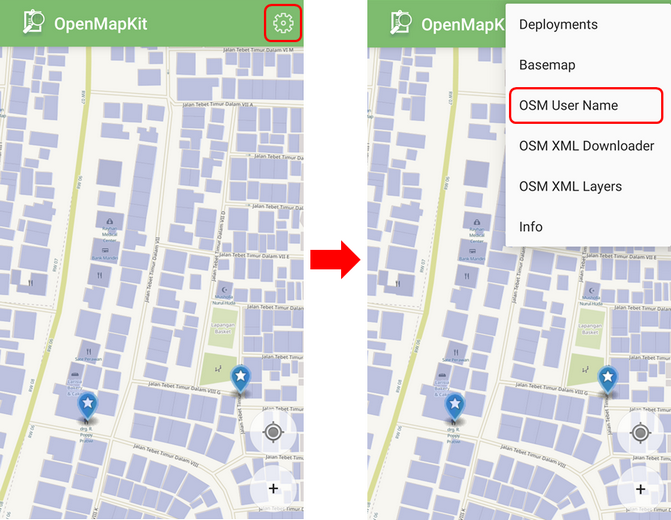
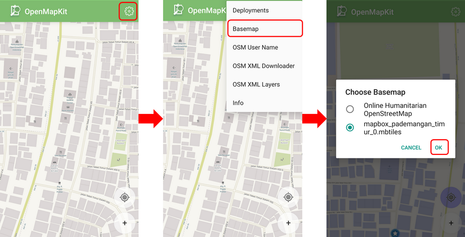
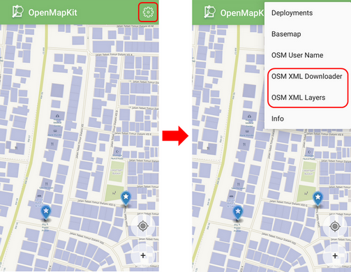
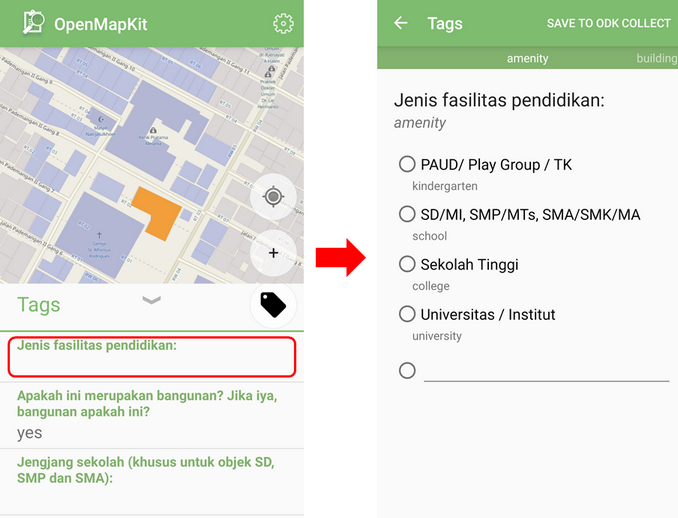
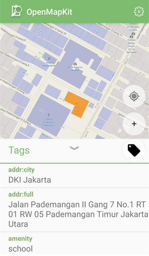
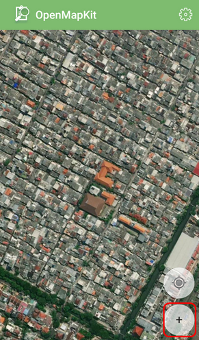
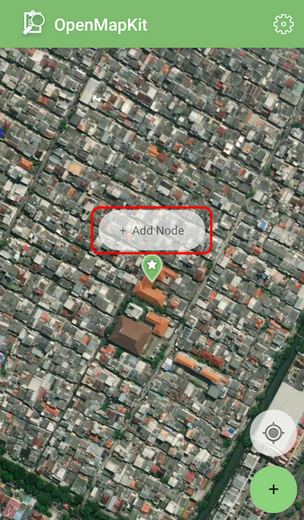
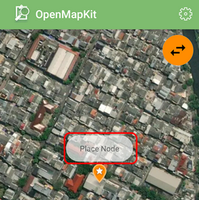
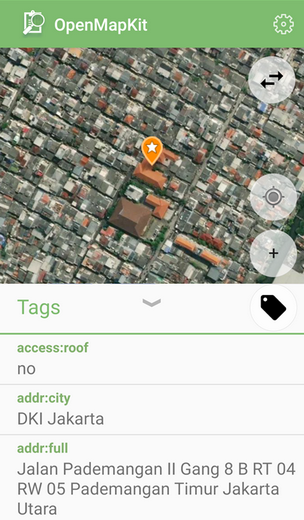

5.2 Using the OpenMapKit Application
Overview
OpenMapKit (OMK) is an additional application that is used to support ODK Collect in determining the position of objects found during precise and precise field surveys. OpenMapKit can be run through ODK Collect, after you open and select one of the available forms. In determining the location of an object, OpenMapKit requires a map background in the form of a satellite imagery or OSM map. If you use the OSM as the map background, the thing to note is that the data must be available on the OSM server. Currently OpenMapKit only available on Android. You can download OpenMapKit for free through the Play Store.
OpenMapKit application on the Play Store
Note: To be able to use OpenMapKit You have to install latest version of ODK (OpenDataKit) Collect, because the form filled in OpenMapKit is sourced from ODK Collect.
This guide provides surveyors, mappers and field supervisors with the skills to:
- Operate the initial setup for OpenMapKit
- Operate how to enter offline basemap for OpenMapKit
- Operate OpenMapKit
Prior to learning how to use OpenMapKit, users should know how to use ODK (OpenDataKit) Collect, an android-based application to replace paper form for surveys as OpenMapKit is an extension of ODK Collect. This extension is used to add information on the position or location of the object surveyed.
Initial Setup for OpenMapKit
Before you use OpenMapKit, you must first make initial setup. The following are step by steps of the initial OpenMapKit setup:
On the home page of OpenMapKit, press the settings button located in the upper right corner.
Select OSM User name OSM and enter your User Name

Display settings menu OpenMapKit
- By default, OpenMapKit will display the Online Humanitarian OpenStreetMap.
Import the offline basemap for OpenMapKit
OpenMapKit provides an OSM map as a basemap that must be accessed using an internet connection. But don’t worry, you can also enter offline basemap into OpenMapKit which is a map that can be opened without an internet connection. An offline basemap can make it easier for you to add information right at the location you are surveying. Here’s how to add offline basemap:
- The format of the data used as a offline basemap in the application OpenMapKit should be formatted as .mbtiles. To create .mbtiles can be seen in the module Make Mbtiles for OMK (OpenMapKit). After you have the .mbtiles file, connect your smartphone to your computer / laptop. Open the folder containing _the .mbtiles _file that will be copied to your smartphone. Select the .mbtiles file then copy it to openmapkit → mbtiles folder your internal storage.

Process of adding .mbtiles files to OpenMapKit
- If you have successfully copied .mbtiles, you can change the OpenMapKit basemap by pressing the settings button located in the top right corner and pressing Basemap then select the .mbtiles that you just entered. Then press OK.

Display basemap settings in OpenMapKit
Basic Operation OpenMapKit
1. Download OSM data in OpenMapKit
Existing OSM data can be easier for you to add information about the building because you can choose the building directly and start adding an information based on the field. Therefore, you should download OSM first data before adding new information. Here’s how to download OSM data in _OpenMapKit_:
Navigate the map to your current location (for example, you are already on the survey location) by pressing the round button in the lower right corner of the screen until the round button is colored blue. A black dot will appear at your current location.

Navigate to the current location in OpenMapKit
Press the settings button in the top right corner
Select OSM XML Downloader to start download OSM data according to the view on the screen of your smartphone (the duration depends on the size of the area). Make sure you are connected to an internet connection when downloading OSM data. Note the color of the building, the building on the OSM _basemap _have brown color and the building from _OSM XML Downloader _ is purple.

Building color on the OSM basemap (left) and downloaded building color (right)
Your new downloaded OSM data will be saved in the format .osm which can be activated or deactivated via the settings button → OSM XML Layer.

OSM XML Downloader menu and OSM XML Layers menu
2. Add building information in OpenMapKit
If you have successfully downloaded building data from OSM, you can add the building information by:
Select the building to which the information will be added. Make sure the building is purple which indicates that the building has been downloaded from OSM. If the building is selected, the color will change to orange.
You can fill the building information in accordance with the form you have chosen before in the ODK Collect application, with press the information tag in the first row located below.

Fill out building information using a form from ODK Collect.
When done, at the end of the page select Save to save the form to ODK Collect. If you have completed filling in the form, the building that you fill in the information will look like this:

Building that has been filled in the information
If the building data for location of your survey is not yet available in the OSM, you can map the building before conducting the survey. If you don’t have time to do the mapping, you can use points to mark the object in the OpenMapKit by:
Use .mbtiles you have entered previously to help mark the object accurately click Settings → Basemap
Press the plus (+) icon in the lower right corner of your screen until it turns green. It will appear green marker with the words Add Node on it. Slide the map until the location of the marker is accurate with the object in the field.

Add markers using the plus (+) icon
Press Add Node if the point is accurate

Add note button when add point
If the point you add turns out to be in a position that is not in represent with the object in the field, you can move the point that has been added by clicking on the point to move then press the two arrow icon in the top right corner. The color of the point will turn orange and above it will be appear Place Node.

Swipe points that have been added
Slide the map to the accurate point position, then press Place Node.

Place node button when shifting a point
After the position is accurate as the object in the field, you can fill out the form the same as the previous step.
Enter information that matches the conditions in the field. Swipe the screen right or left to change thepage questionon the form.
At the end of the page, select Save to save the form to ODK Collect. If you finished to fill in forms, the marker that you fill in the information will look like this:

Point of objects already loaded with informations
Now you can see the form has been successfully saved on the ODK Collect.